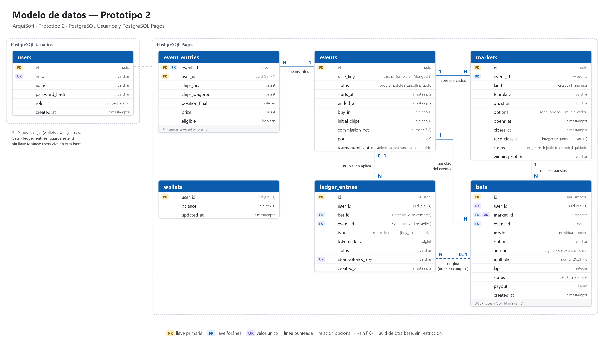

Modelo de datos — Prototipo 2
ArquiSoft · Prototipo 2 · PostgreSQL Usuarios, PostgreSQL Pagos, MongoDB y Redis
Fuente: pestaña «Vista C&C prototipo 2» (sección Modelo de datos) del documento del equipo, con las reglas de
«Requisitos prototipo 2» e «Historias prototipo 2». Reemplaza al modelo del prototipo 1
(modelo-datos-pagos-p1.pdf). Los valores entre corchetes son tentativos.
Tipos: las columnas que ya existían en el prototipo 1 conservan su tipo; los de las columnas nuevas los fijó T2-03
siguiendo las mismas convenciones (ver la última sección).
El prototipo 2 tiene 4 bases y cada una tiene un solo dueño (RNF-18): nadie escribe en la base de otro, y los datos
ajenos se piden por contrato.
| Base | Escribe | Lee | Qué guarda |
|---|
| PostgreSQL Usuarios | Usuarios | Usuarios | Tabla users |
| PostgreSQL Pagos | Pagos (API y consumidor del Broker) | Pagos | wallets, events, event_entries, markets, bets y ledger_entries. El Motor guarda mercados y apuestas a través de Pagos, por REST |
| MongoDB | Ingestor | Motor (sin permiso de escritura) | Carreras descargadas, simulaciones programadas y datos reproducidos |
| Redis | Motor | Motor | Fichas y ranking del torneo en curso |
Qué cambia respecto al prototipo 1
- La tabla
users se parte: la cuenta va a PostgreSQL Usuarios y el saldo a wallets en Pagos. Pierde balance y points.
- Como
user_id apunta a otra base, en Pagos no es llave foránea, sino un uuid sin restricción.
- Los mercados dejan MongoDB y pasan a la tabla
markets de Pagos; bets.market_id pasa a ser llave foránea.
- Tablas nuevas:
wallets, events, event_entries y markets.
ledger_entries pierde points_delta: las fichas no son tokens y no pasan por el ledger.
Por qué existe cada tabla
| Tabla | Requisito que la exige |
|---|
| users | RF-01 registro, RF-02 inicio de sesión, RF-21 acceso del administrador (rol admin), RNF-17 contraseñas con bcrypt o Argon2. |
| wallets | RF-01: el registro crea la billetera con saldo 0. RF-05 y HU2-04: la compra se acredita en wallets, ya no en users. |
| events | HU2-07: el Gestor crea el evento en Pagos al ver la simulación programada. RF-06 calendario, RF-07 inscripción, RF-08 torneo cancelado, RF-16 reparto. |
| event_entries | RF-07: una sola inscripción por evento. RF-16: las fichas finales, el puesto y el premio quedan en event_entries. |
| markets | RF-10 estáticas, RF-11 dinámicas, RF-13 cierre según el tiempo de carrera. RF-26: las consultas agrupan por tipo y plantilla, y todas las responde Pagos. |
| bets | RF-12 y RNF-11: debitar y registrar la apuesta en una sola transacción; una sola apuesta por usuario y mercado. RNF-20: cada apuesta del torneo queda en bets. |
| ledger_entries | RNF-20: cada movimiento de tokens queda en el ledger. RNF-12: clave de idempotencia única. RF-25: base del resumen financiero. |
Diagrama (bases relacionales)

PostgreSQL Usuarios
users — la cuenta
Igual que en el prototipo 1, sin balance ni points.
| Atributo | Tipo | Qué guarda |
|---|
| id | UUID · PK | Identifica al usuario. El Gateway lo pasa a los servicios en X-User-Id (RF-02) y es el user_id que guardan las tablas de Pagos. |
| email | VARCHAR(255) · UNIQUE | Un correo repetido se rechaza y no se crea nada (RF-01). |
| name | VARCHAR(100) | Nombre del usuario; parte del perfil de la página del usuario (RF-04). |
| password_hash | VARCHAR(255) | Hash con bcrypt o Argon2 (RNF-17). |
| role | VARCHAR(20) · CHECK | player o admin. El registro crea rol jugador (RF-01); el Gateway lo pasa en X-User-Rol (RF-02); la CLI solo deja entrar con rol admin (RF-21). |
| created_at | TIMESTAMPTZ | Fecha de registro. |
PostgreSQL Pagos
wallets — el saldo en tokens
| Atributo | Tipo | Qué guarda |
|---|
| user_id | UUID · PK · sin FK | Una billetera por usuario. |
| balance | BIGINT · CHECK ≥ 0 | Tokens disponibles. Recibe el saldo que estaba en users.balance (T2-03). El saldo nunca queda negativo (RNF-11). |
| updated_at | TIMESTAMPTZ | Último cambio del saldo. |
events — cada carrera simulada y su torneo
| Atributo | Tipo | Qué guarda |
|---|
| id | UUID · PK | Identifica el evento. |
| race_key | VARCHAR(100) | Carrera de MongoDB que se simula. |
| status | VARCHAR(20) · CHECK | Estado de la carrera: programado, en_curso o finalizado. El calendario muestra los programados y en curso (RF-06). |
| starts_at | TIMESTAMPTZ | Hora de largada. En la largada se cierran las inscripciones y las estáticas (HU2-07); el calendario la muestra con cuenta regresiva (HU2-05). |
| ended_at | TIMESTAMPTZ · nulo | Fin de la carrera. |
| buy_in | BIGINT · CHECK > 0 | Costo de inscripción [100 tokens] (RF-07). |
| initial_chips | BIGINT · CHECK > 0 | Fichas de cada inscrito [1000] (RF-07). En Redis, las fichas actuales son fichas iniciales + suma del hash. |
| commission_pct | NUMERIC(5,2) · 0–100 | Comisión de la casa sobre el botín [10 %], en por ciento (10 = 10 %). |
| pot | BIGINT · CHECK ≥ 0 | Botín: las inscripciones van al botín; el calendario lo muestra (RF-06). Premios + comisión + residuo suman exactamente lo cobrado en inscripciones (RNF-11). |
| tournament_status | VARCHAR(20) · CHECK | Estado del torneo: abierto, activo, cancelado o repartido. Si en la largada hay menos de 4 inscritos, el torneo se cancela y solo queda el modo individual (RF-08). |
event_entries — cada inscrito y cómo terminó
Durante el evento las fichas viven en Redis. Al cerrar el evento, las fichas finales, el puesto y el premio quedan aquí y Redis se limpia (RF-16).
| Atributo | Tipo | Qué guarda |
|---|
| event_id | PK · FK → events | Evento al que se inscribió. |
| user_id | UUID · PK · sin FK | Quién se inscribió. La PK (event_id, user_id) deja una sola inscripción por evento (RF-07). |
| chips_final | BIGINT · nulo | Fichas con que terminó (RF-16). |
| chips_wagered | BIGINT · nulo | Fichas apostadas. Para entrar al reparto hay que apostar al menos el [50 %] de las fichas iniciales. |
| position_final | INTEGER · nulo | Puesto final (RF-16). |
| prize | BIGINT · nulo | Premio en tokens (RF-16). |
| eligible | BOOLEAN · nulo | Si alcanzó el mínimo apostado para entrar al reparto. |
markets — los mercados de cada evento
Antes estaban en MongoDB. Ahora están en Pagos, porque todas las consultas del administrador las responde Pagos.
| Atributo | Tipo | Qué guarda |
|---|
| id | UUID · PK | Identifica el mercado. |
| event_id | FK → events | Evento al que pertenece. |
| kind | VARCHAR(20) · CHECK | estatica (catálogo fijo, RF-10) o dinamica (plantilla durante la carrera, RF-11). |
| template | VARCHAR(100) | Plantilla del mercado. RF-26 agrupa la rentabilidad, dentro de cada tipo, por plantilla. |
| question | VARCHAR(255) | Pregunta que ve el jugador. Ejemplo de RF-11: «¿Habrá cambio de líder en el próximo minuto?». |
| options | JSONB | Opciones, cada una con su multiplicador (RF-10, RF-11): lista de {"opcion", "multiplicador"}. |
| opens_at | TIMESTAMPTZ · nulo | Apertura del mercado. |
| closes_at | TIMESTAMPTZ · nulo | Cierre del mercado. |
| race_close_s | INTEGER · nulo | Segundo de carrera del cierre. Los mercados se cierran según el tiempo de carrera (RF-13, RNF-19). |
| status | VARCHAR(20) · CHECK | programado, abierto, cerrado o liquidado. Pagos rechaza una apuesta si el mercado ya cerró (RNF-19). |
| winning_option | VARCHAR(100) · nulo | Opción ganadora. |
bets — cada apuesta, individual o de torneo
| Atributo | Tipo | Qué guarda |
|---|
| id | UUID · PK | Sin cambios respecto al prototipo 1 (lo genera el Motor). |
| user_id | UUID · sin FK | Quién apostó. Deja de ser llave foránea. |
| market_id | FK → markets | En qué mercado. Pasa a ser llave foránea. |
| event_id | FK → events | Evento de la apuesta. |
| mode | VARCHAR(20) · CHECK | individual o torneo. Las estáticas siempre son individuales; en las dinámicas el inscrito apuesta fichas y el no inscrito tokens (RF-09). |
| option | VARCHAR(100) | Opción elegida. |
| amount | BIGINT · CHECK > 0 | Tokens (individual) o fichas (torneo). Mayor que 0 (RF-12). |
| multiplier | NUMERIC(6,2) · CHECK > 0 | Multiplicador de la opción. Si acierta recibe monto × multiplicador (RF-14, RF-15). RF-26 muestra el promedio. |
| lap | INTEGER · nulo | Vuelta de carrera en que se hizo la apuesta (RF-27). Nulo si se apostó antes de la largada. |
| status | VARCHAR(20) · CHECK | pending, won o lost. |
| payout | BIGINT · nulo | Lo que recibió: monto × multiplicador si acertó; nada si falló (RF-14, RF-15). Nulo mientras está pendiente. En tokens se trunca a entero. |
| created_at | TIMESTAMPTZ | Cuándo se hizo. RF-27 agrupa por franja horaria del día. |
Único (user_id, market_id): una sola apuesta por usuario y mercado, aunque sea desde otro navegador (RF-12, HU2-09).
ledger_entries — todos los movimientos de tokens
| Atributo | Tipo | Qué guarda |
|---|
| id | BIGSERIAL · PK | Sin cambios respecto al prototipo 1. |
| user_id | UUID · sin FK | De quién es el movimiento. |
| bet_id | FK → bets · nulo | Apuesta que lo originó. Nulo en compras. |
| event_id | FK → events · nulo | Evento relacionado. Nulo si no aplica. |
| type | VARCHAR(20) · CHECK | Tipo de movimiento (tabla de abajo). |
| tokens_delta | BIGINT | Cambio en tokens. |
| status | VARCHAR(20) | Estado del movimiento. Siempre completed: solo se escribe dentro de transacciones exitosas. |
| idempotency_key | VARCHAR(255) · UNIQUE | Débitos, compras, inscripciones, liquidaciones y reparto llevan clave única (RNF-12). |
| created_at | TIMESTAMPTZ | Fecha del movimiento. RF-25 consulta por período. |
| type | Cuándo | Requisito |
|---|
| purchase | Compra simulada de tokens | RF-05 |
| debit | Apuesta individual: Pagos debita y registra la apuesta en una sola transacción | RF-12 |
| settle | Liquidación de una apuesta individual | RF-14 |
| buy_in | Inscripción al torneo | RF-07 |
| refund | Devolución de la inscripción cuando el torneo se cancela | RF-08 |
| prize | Premio del reparto del botín | RF-16 |
Las apuestas de torneo no dejan fila en el ledger: se hacen con fichas, que no son tokens. Quedan registradas en bets (RNF-20).
MongoDB
Solo escribe el Ingestor; el Motor lee y no tiene permiso de escritura (RNF-18, HU2-14).
| Colección | Qué guarda |
|---|
| carreras | Carreras descargadas de OpenF1: posiciones, coordenadas, vueltas, pits y control de carrera. Se descargan una sola vez por carrera (RF-23). |
| simulaciones | Simulación programada o en curso: carrera, hora de largada, punto de inicio y latido. Solo hay una a la vez (RF-22). |
| eventos_carrera | Cada dato reproducido, con su tiempo de carrera (RF-23). |
Redis (solo durante el evento)
Solo escribe el Motor (RNF-18).
| Clave | Tipo | Qué guarda |
|---|
| torneo:{evento}:{usuario} | Hash | Por cada apuesta, su efecto neto en fichas (bet_id → delta). |
| torneo:{evento}:ranking | Sorted set | Fichas actuales de cada inscrito. |
Las fichas nunca se suman. Al apostar se escribe delta = −monto; al liquidar se sobrescribe con lo ganado menos
lo apostado. Luego se recalcula el total (fichas iniciales + suma del hash) y se escribe con ZADD. Repetir cualquiera de
los dos pasos deja el mismo resultado. Al cerrar el evento, las fichas finales pasan a event_entries y las
claves se borran.
Migración desde el prototipo 1 (T2-03)
users, sin balance ni points, queda en PostgreSQL Usuarios.- Cada saldo pasa a
wallets sin perder ningún token.
- Lo hace
scripts/migrar-p1.sh, que compara usuarios y tokens a ambos lados y falla si no coinciden. El historial del prototipo 1 (bets, ledger_entries) no se migra: sus apuestas apuntan a mercados de MongoDB, que no existen como filas de markets.
- La base de Pagos queda con
wallets, events, event_entries, markets, bets (con único user_id + market_id) y ledger_entries sin points_delta.
Decisiones de T2-03
El documento del equipo no fija estos puntos. T2-03 los resolvió así:
- Identificadores de
events y markets: UUID, como users y bets. Fechas: TIMESTAMPTZ.
- Tokens y fichas (
buy_in, pot, prize, payout, chips_*, initial_chips): BIGINT. Los premios son tokens enteros y en el prototipo 1 nunca se usó float para dinero.
multiplier: NUMERIC(6,2). commission_pct: NUMERIC(5,2), en por ciento.markets.options: JSONB, lista de {"opcion", "multiplicador"}.- Estados: VARCHAR con CHECK, como en el prototipo 1.
ledger_entries.status sigue siendo completed.
- El pago de una apuesta individual que acierta es monto × multiplicador truncado a tokens enteros.
- Las columnas de resultado de
event_entries, ended_at, bets.lap y bets.payout son nulas hasta que se conocen.
Sigue abierto
- Si
opens_at y closes_at son hora real o tiempo de carrera, y cómo se relacionan con race_close_s (HU2-07, HU2-08).
- RF-25 pide el equivalente en COP de lo comprado, pero no hay columna en COP: se calcularía con la tasa configurada.
- Dónde queda la comisión y el residuo del reparto: no hay columna para ninguno de los dos. Se proponía que los puestos del podio sin jugadores elegibles vayan a la casa (pregunta abierta 4).